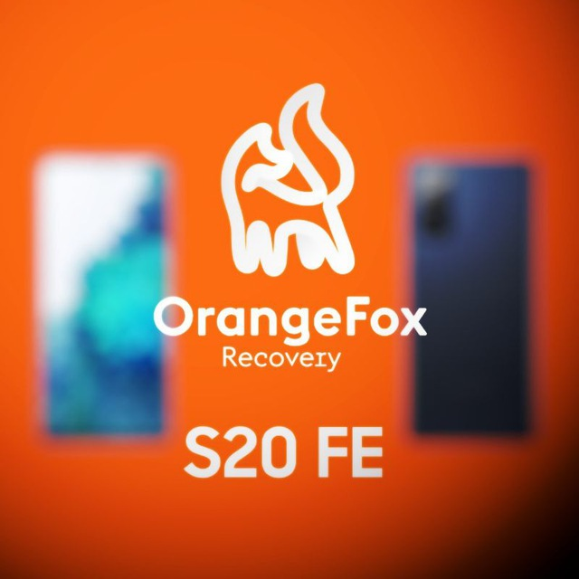

My name is TurboRCT. I am a small developer and maintainer of OrangeFox Recovery and part of the ProjectX ROM team both for the Galaxy S20 FE.
Projects
OrangeFox Recovery for the Galaxy S20 FE

OrangeFox Recovery is a custom recovery based on TWRP that offers a number of additional features and improvements. To download OrangeFox Recovery join my Telegram group.
ProjectX custom ROM for the Galaxy S20 FE
ProjectX is a custom ROM based on OneUI that offers a number of additional features and improvements. It is designed specifically for the Galaxy S20 FE and offers stability, security, and performance enhancements. It also includes many customization options that allows users to personalize their devices. Find more information and download ProjectX custom ROM here.